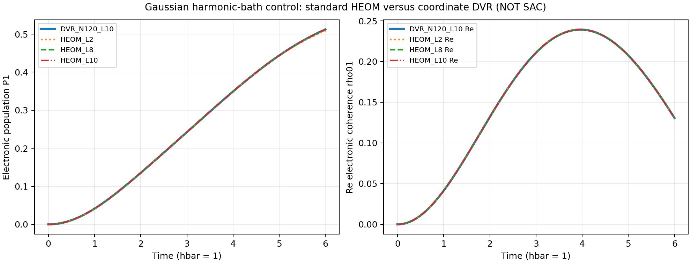
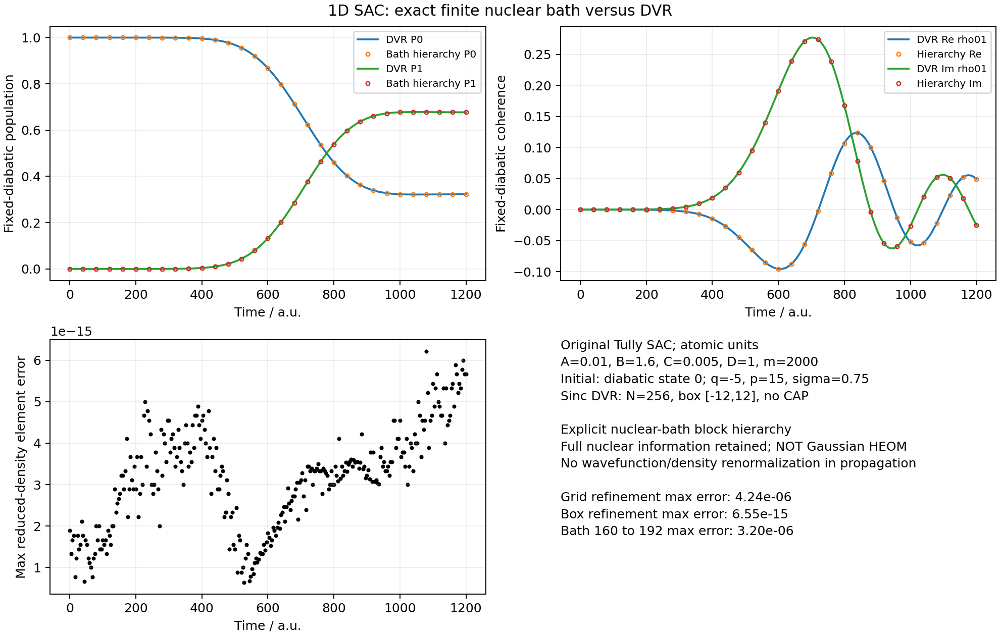

Quantum Dynamics
HEOM: Theory, Boundaries, and DVR Tests
Can the nuclear coordinate in a nonadiabatic scattering model be treated as a bath and solved with hierarchical equations of motion (HEOM)? The answer depends on the bath statistics and preparation, not on the name assigned to the coordinate. This note derives the standard Gaussian hierarchy, explains why the original simple avoided crossing (SAC) model lies outside that implementation, and separates two numerical tests: genuine HEOM against a harmonic-bath DVR reference, and explicit electron–nuclear propagation of SAC in two bases.
The DVR methods note and wavepacket propagation note introduce the coordinate discretization and spectral propagator. Here the new issue is what information is retained when the nuclear degrees of freedom are eliminated. The tests below are implementation validations with stated initial conditions, rather than reproductions of a particular published figure.
1. HEOM: equations, derivation, and physical picture
From a joint Hamiltonian to a reduced state
Set \(\hbar=1\) and consider one Hermitian system operator \(Q\) coupled to a zero-mean bath operator \(B\):
For this derivation, the preparation is factorized, \(\rho_{SB}(0)=\rho_S(0)\otimes\rho_B^{\rm eq}\), with \(\rho_B^{\rm eq}=e^{-\beta H_B}/Z_B\). A standard realization is a thermal harmonic bath with linear coupling:
The bath is Gaussian in the operators that enter the coupling. All connected contour-ordered cumulants above second order vanish, so the mean and two-time correlation determine the influence of the bath. Higher moments themselves do not vanish: Wick factorization expresses them through pair correlations. This Gaussian closure is the key assumption behind the hierarchy derived here; see Tanimura's HEOM review.
The symmetric part describes fluctuations; the commutator part encodes quantum response. Retaining both matters: replacing the bath by a prescribed real random force generally discards part of its backreaction.
Eliminating the bath produces memory
Let \(Q_+(s)\) and \(Q_-(s)\) denote the coupling along the forward and backward system paths, with \(\Delta Q=Q_+-Q_-\). Gaussian integration gives the influence functional
The nested integral says that the present system feels its earlier coupling to the bath. Directly storing that history is inconvenient. HEOM replaces the time convolution by coupled auxiliary variables when the correlation is expressed as exponentials:
Both expressions use the same, conjugation-closed set of rates. For real rates, \(c_k^R=(c_k^L)^*\). For complex rates, conjugation also exchanges the paired rates; blindly conjugating a coefficient at an unchanged rate is incorrect. Purely imaginary rates describe undamped discrete modes.
Define a memory factor for each exponential:
Now insert \(\prod_k z_k^{n_k}\) into the double path integral for the reduced density matrix and call the resulting object \(\rho_{\mathbf n}\), where \(\mathbf n=(n_1,\ldots,n_K)\). These are auxiliary density operators (ADOs); the root \(\rho_{\mathbf0}\) is the physical reduced state. Differentiation has three contributions: free system evolution, differentiation of the inserted memory factors, and differentiation of the influence functional. The first preserves the tier, the second lowers it, and the third raises it. Collecting them gives the unscaled hierarchy:
Here \(\mathbf e_k\) increases one occupation index by one. For the stated factorized preparation, \(\rho_{\mathbf0}(0)=\rho_S(0)\) and all nonroot ADOs initially vanish. In the code, ADOs are rescaled for numerical conditioning; that is a change of variables, not a different bath model.
What the hierarchy means physically
The root receives feedback from first-tier ADOs; those ADOs carry bath memory and couple to higher tiers. This creates time-local equations in an enlarged space while the reduced state alone remains non-Markovian. An ADO is generally neither a normalized density matrix nor a probability for a particular phonon number. Its index labels memory factors, not explicit oscillator occupations.
Two independent limits matter: the number \(K\) of exponentials needed to represent the bath correlation, and the maximum tier \(L=\sum_k n_k\). The implementation uses a hard tier cutoff, with no automatic tail terminator or counterterm. A converged hierarchy can retain strong coupling and long memory within its bath assumptions. Increasing \(L\) cannot repair a physically incorrect correlation model.
2. Boundaries: Gaussian baths, harmonic motion, SAC, and DVR
Three related assumptions that should not be conflated
| Property | Meaning in this construction |
|---|---|
| Harmonic bath | The bath Hamiltonian is quadratic in its canonical coordinates and momenta. |
| Gaussian bath statistics | The coupled bath operators have no connected multi-time cumulants beyond second order. |
| Linear bath coupling | The operator multiplying the system coupling is linear in bath coordinates or ladder operators. |
A thermal harmonic bath with linear coupling supplies the Gaussian statistics needed above. Harmonic motion alone is insufficient if the initial state is non-Gaussian or the coupled observable is nonlinear. Conversely, Gaussian statistics are a statement about an operator process, not a synonym for a harmonic potential. The system operator \(Q\) need not be linear in a system coordinate, and \(H_S\) need not be harmonic. The restriction discussed here concerns the bath side of the partition.
The stationary thermal and factorized preparation is the scope of this implementation, not a universal prohibition on all HEOM variants. Correlated preparations and other bath classes require corresponding formulations and initialization procedures.
Why the original SAC model is outside this standard HEOM
In the fixed diabatic basis, Tully's simple avoided crossing has
Calling the nucleus the bath identifies \(H_B=p^2/(2m)\), \(B_z=f(q)\), and \(B_x=g(q)\). It does not make either coupled bath operator linear or Gaussian. A simple illustration is a centered real Gaussian variable with variance \(s^2\): the nonlinear variable \(X=q^2-s^2\) has \(\langle X^3\rangle=8s^6\ne0\). A Gaussian coordinate therefore does not imply Gaussian statistics for nonlinear functions of that coordinate.
There are two further obstacles. An incident localized nuclear packet is not a stationary Gibbs state of the free bath, so correlations generally depend on both times, \(C_{ab}(t,s)\), rather than only \(t-s\); its time-dependent mean must also be retained. Moreover, \(f(q)\) and \(g(q)\) act on the same coordinate and form correlated channels. They cannot simply be passed to an implementation that assumes independent Gaussian baths.
Approximating SAC by a harmonic bath and linearizing its couplings would define a different model. Retaining the original Hamiltonian instead requires explicit nuclear dynamics or a suitable generalized treatment of non-Gaussian, nonstationary correlations. Hsieh and Cao's generalized hierarchy provides a framework based on multi-time bath correlations. That construction has not been implemented in this work. Adding tiers to the standard second-cumulant hierarchy does not restore omitted higher cumulants.
How DVR differs
DVR is a representation of coordinate operators. Here it discretizes the full electron–nuclear Hamiltonian and propagates its joint state. It does not assume a Gaussian bath or eliminate nuclei through a two-time correlation. Its main numerical controls are spatial resolution, box size, and propagation accuracy. HEOM instead eliminates a bath under specified statistical assumptions and controls the resulting correlation expansion and hierarchy truncation.
They are therefore not mutually exclusive alternatives at the same conceptual level: a system coordinate can itself be represented by DVR and coupled to an external HEOM bath. For this note, coordinate DVR supplies an explicit reference against which the reduced electronic density is compared.
3. Numerical tests and what they establish
Both comparisons use the complete complex electronic density matrix in one fixed diabatic basis. With grid weights absorbed into the discrete amplitudes, \(\rho_{ij}(t)=\sum_a\psi_{ia}(t)\psi_{ja}^*(t)\) for a pure joint state. The reported error is
Agreement in populations alone would miss phase and conjugation errors, so the coherence \(\rho_{01}\) is checked as well. No density or wavefunction is renormalized during propagation.
Test A: genuine Gaussian HEOM versus harmonic-bath DVR
The first test deliberately satisfies the standard assumptions. In units with \(\hbar=m=1\),
We use \(\omega=0.9\), \(g=0.19\), \(\beta=2.2\), and \(0\le t\le6\), with 301 saved times. Initially the electronic system is in state 0 and the uncoupled oscillator is in its thermal Gibbs state. Its correlation has an exact two-exponential form:
The independent reference constructs and diagonalizes the coupled coordinate-DVR Hamiltonian. It is an actual spatial calculation, not an analytic expression relabeled as DVR.
| Comparison | Maximum density-element difference |
|---|---|
| HEOM depth 2 versus DVR | \(3.6860\times10^{-3}\) |
| HEOM depth 4 versus DVR | \(5.6156\times10^{-5}\) |
| HEOM depth 8 versus DVR | \(2.9882\times10^{-9}\) |
| HEOM depth 10 versus DVR | \(9.5502\times10^{-12}\) |
| DVR grid: 64 to 96 points, box \([-8,8]\) | \(7.1887\times10^{-14}\) |
| DVR box: \([-8,8]\) to \([-10,10]\), fixed spacing | \(1.4527\times10^{-13}\) |


The declared HEOM tolerance was \(10^{-7}\), with DVR refinement tolerance \(10^{-8}\). Both passed. This validates the implemented Gaussian hierarchy on the specified finite-time oscillator problem; it does not establish accuracy for every spectral density, temperature, or coupling strength.
Test B: original SAC, with full nuclear information retained
For SAC we keep \(A=0.01\), \(B=1.6\), \(C=0.005\), \(D=1\), and \(m=2000\), all in atomic units. The initial electronic state is fixed diabatic state 0, with
We propagate to \(t=1200\), saving 301 times. The reference uses a cell-centered sinc DVR with 256 points in \([-12,12]\), no absorbing potential, and full-Hamiltonian spectral propagation.
The second route diagonalizes the nuclear kinetic matrix, \(U^\dagger T_nU=\varepsilon\), and transforms the same finite Hamiltonian and initial state:
Krylov exponential propagation then evolves all retained nuclear amplitudes. With all nuclear states retained, this is a unitary basis change of the same joint problem. No harmonic approximation, coupling linearization, or Gaussian bath replacement has been made.
The general finite-bath interface can also store electronic density blocks \(R_{nm}=\langle n|\rho_{SB}|m\rangle\), with \(\rho_S=\sum_nR_{nn}\). For \(H_{nm}=\langle n|H|m\rangle\), their exact equation is
The code calls this interface FiniteBathHierarchy. Its blocks retain the explicit bath indices; they are not the memory-factor ADOs in Section 1. This pure-state SAC run uses its factor-propagation route, equivalent to the full joint wavefunction. It is not standard HEOM, not a generalized cumulant HEOM implementation, and not a demonstration of bath compression.
| Check | Maximum difference or diagnostic |
|---|---|
| Full nuclear basis versus same-grid DVR, \(N=256\) | \(6.2172\times10^{-15}\) |
| DVR grid: 192 to 256 points, box \([-12,12]\) | \(4.2355\times10^{-6}\) |
| DVR box: \([-12,12]\) to \([-15,15]\), fixed \(\Delta q=0.09375\) | \(6.5503\times10^{-15}\) |
| Retained nuclear states: 160 to 192 on the 192-point grid | \(3.1950\times10^{-6}\) |
| 128 retained states versus full 192-point DVR | \(2.9173\times10^{-2}\): insufficient |
| Trace error, \(N=256\) | \(4.8850\times10^{-15}\) |
| Energy drift, \(N=256\) | \(2.2204\times10^{-16}\) a.u. |
| Maximum probability within 2 a.u. of either boundary | \(6.0052\times10^{-11}\) |


At the final saved time, \(P_0=0.322901424\), \(P_1=0.677098576\), and \(\rho_{01}=0.049395406-0.024978485i\). These are finite-time fixed-diabatic observables, not asymptotic adiabatic scattering probabilities. The spatial refinement requirement was \(10^{-5}\). Thus the same-grid \(10^{-15}\) agreement is an implementation consistency check; it is not a claim of continuum accuracy to fifteen digits.
Validation scope and reproducible code
The original implementation passed 43 relevant tests, covering HEOM, finite-bath propagation, DVR, public interfaces, and curve diagnostics. The accepted plotted series passed declared finite-value, abscissa, high-frequency residual, endpoint, and spike checks, followed by visual inspection. No smoothing was applied to the physical output. A 301-to-601 saved-time control was also performed for SAC; because the propagators evaluate matrix exponentials, that is an output-schedule check, not an integration-step convergence study.
The scientific conclusion has two parts: standard HEOM agrees with coordinate DVR for the Gaussian harmonic control, while original SAC agrees between two explicit representations of its joint electron–nuclear dynamics. Solving original SAC with a genuinely generalized non-Gaussian, nonstationary HEOM remains unfinished.
- Reproduction instructions and scope.
- Download the self-contained Python source bundle, including both benchmark runners and their minimal dependencies.
The downloadable bundle uses NumPy, SciPy, and Matplotlib. Its README gives commands that run outside the original research repository and distinguishes the accepted benchmark source from publication packaging.
References
- Y. Tanimura, “Perspective: Numerically ‘exact’ approach to open quantum dynamics: The hierarchical equations of motion (HEOM),” J. Chem. Phys. 153, 020901 (2020). DOI; open manuscript.
- C.-Y. Hsieh and J. Cao, “A unified stochastic formulation of dissipative quantum dynamics. I. Generalized hierarchical equations,” J. Chem. Phys. 148, 014103 (2018). DOI; open manuscript.
- J. C. Tully, “Molecular dynamics with electronic transitions,” J. Chem. Phys. 93, 1061–1071 (1990). DOI.